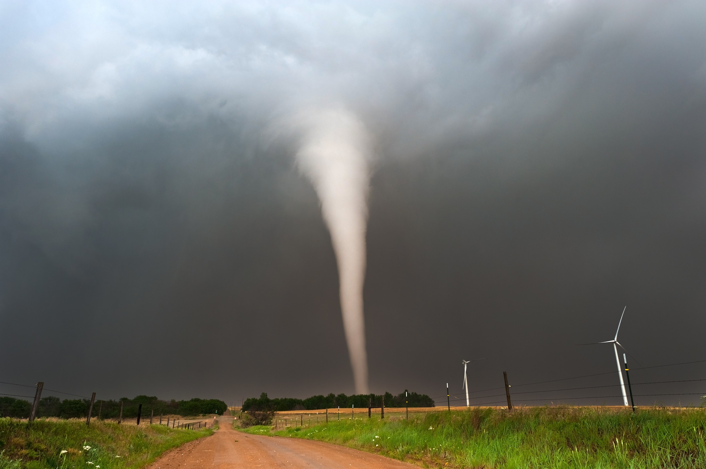

ESTIAGEM
O impacto da seca e do calor intenso no planeta
O calor intenso e a falta de chuva deixaram a terra completamente seca e rachada. Este cenário mostra o impacto severo da estiagem prolongada na vegetação e no solo, dificultando a agricultura e a vida na região.
CLIMA • MEIO AMBIENTE